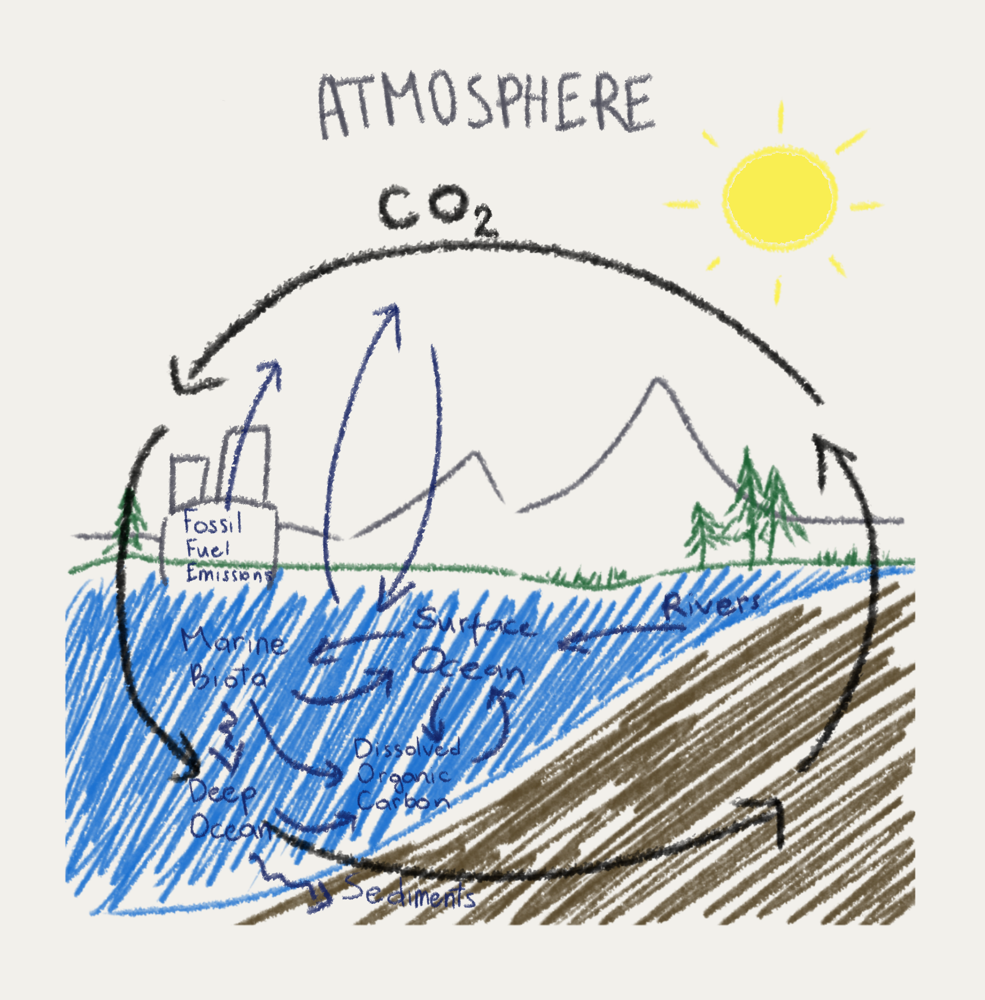

Phytoplankton play a major role in the global carbon cycle.
Although they represent less than 1% of the photosynthetic biomass on Earth, they are responsible for about half of global carbon dioxide (CO2) fixation (the process of photosynthetic organisms turning inorganic carbon into organic compounds (carbohydrates)).
Carbon fixation is an essential step of the Calvin cycle, which is part of photosynthesis. Without it, it would be impossible for photosynthetic organisms to make their own food.
Phytoplankton help move carbon from the atmosphere into surface waters. Carbon is then incorporated into aquatic organisms as organic matter.
Once they die, their dead cells, shells and other parts sink deeper into the ocean. The carbon dioxide is released into the deep water through decomposition. In the bottom of the ocean, layers of carbon-rich sediments form. These sediments may become rocks after millions of years, locking up carbon for even longer.
Sources:
- https://www.noaa.gov/education/resource-collections/marine-life/aquatic-food-webs
- https://teara.govt.nz/en/diagram/5137/marine-food-chain
- https://www.britannica.com/video/152183/Phytoplankton-foundation-food-chains
- https://oceanconservancy.org/blog/2019/08/09/plankton-small-organism-big-role/
- https://www.sciencelearn.org.nz/resources/367-toxins-and-food-webs
- https://manoa.hawaii.edu/exploringourfluidearth/biological/fish/energy-acquisition-growth-development-and-reproduction-fish
Input a distance in kilometers and you will get how many kilograms of Phytoplankton is needed to offset a car's CO2 emissions.
